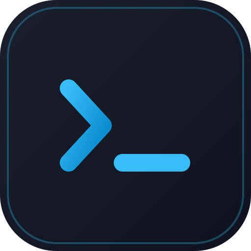

HTTP and gRPC, side by side
Build REST requests or call unary and streaming gRPC methods using reflection or local proto files.

API Client RebornA lightweight, local-first client for HTTP and gRPC. Keep requests readable, version them with Git, and inspect streams without holding the whole response in memory.
Free and open source · macOS, Windows, and Linux · No account required
page 1 limit 20
Send requests, inspect responses, and keep your work in the same project workflow as your code.
Build REST requests or call unary and streaming gRPC methods using reflection or local proto files.
Store collections as plain files, review changes in Git, and share them through the same workflow as your code.
Inspect live events and streaming responses while response data is spooled to disk.
Switch environments, use variables in requests, and keep local secrets outside version control.
Copy requests as cURL or grpcurl, and export collections as portable shell scripts.
Use a native desktop app with a theme that follows your system or switches to light or dark.
Requests, environments, and collections live as files you can inspect, back up, and version. No proprietary workspace database or mandatory cloud account sits between you and your work.
See the file formatsServer-sent events, chunked HTTP, and gRPC server streams arrive incrementally. Full response data is spooled to disk while the interface keeps a bounded preview available.
Download the latest release or browse the source, report an issue, and help shape what comes next.